Sistema de Gestión de Inventario y Ventas
Guía práctica para administradores y clientes
Información general del documento y registro de cambios.
| Código del documento | MAN-HECH-001 |
|---|---|
| Título | Manual de Usuario — Sistema de Gestión de Inventario y Ventas |
| Versión | 1.0 |
| Fecha de emisión | Octubre de 2026 |
| Elaborado por | Equipo de Desarrollo — Hechizos Diseños y Complementos |
| Aprobado por | Dirección General |
| Estado | Vigente |
| Dirigido a | Personal administrativo y clientes del sistema |
| Versión | Fecha | Descripción del cambio | Autor |
|---|---|---|---|
| 1.0 | Octubre 2026 | Versión inicial del manual. Documenta los módulos públicos, de cliente y administrativos. | Equipo de Desarrollo |
Este manual describe el funcionamiento del Sistema de Gestión de Inventario y Ventas de Hechizos Diseños y Complementos. La aplicación permite administrar el catálogo de productos, controlar las existencias, gestionar clientes y ventas, emitir facturas y generar reportes de operación. Para los clientes, ofrece un catálogo en línea con carrito de compras y seguimiento de pedidos.
El documento está organizado en nueve capítulos que avanzan desde los conceptos generales y el acceso al sistema hasta la operación detallada de cada módulo, las preguntas frecuentes y el glosario de términos. Cada sección combina explicaciones, tablas de referencia, pasos numerados y capturas reales de la aplicación.
Las capturas provienen de un entorno de demostración; los nombres, correos, productos y montos son ficticios.
Resumen de capítulos y secciones. Se recomienda leer los capítulos I a III y luego consultar el capítulo correspondiente a cada tarea.
| Tipo | Contenido | Pág. |
|---|---|---|
| Capítulo | I. Generalidades | — |
| Sección | 1.1 Introducción | — |
| Sección | 1.2 Objetivo del manual | — |
| Sección | 1.3 Alcance | — |
| Sección | 1.4 Dirigido a | — |
| Sección | 1.5 Requisitos del sistema | — |
| Sección | 1.6 Convenciones del documento | — |
| Capítulo | II. Inicio y acceso al sistema | — |
| Sección | 2.1 Página principal | — |
| Sección | 2.2 Inicio de sesión | — |
| Sección | 2.3 Registro de nuevos clientes | — |
| Sección | 2.4 Recuperación de contraseña | — |
| Sección | 2.5 Cierre de sesión | — |
| Sección | 2.6 Menú de usuario y perfil | — |
| Sección | 2.7 Recomendaciones de seguridad | — |
| Capítulo | III. Roles y responsabilidades | — |
| Sección | 3.1 Administrador | — |
| Sección | 3.2 Cliente | — |
| Sección | 3.3 Matriz de permisos | — |
| Capítulo | IV. Operación de módulos administrativos | — |
| Sección | 4.1 Panel de control | — |
| Sección | 4.2 Gestión de productos | — |
| Sección | 4.3 Gestión de categorías | — |
| Sección | 4.4 Control de inventario | — |
| Sección | 4.5 Gestión de clientes | — |
| Sección | 4.6 Gestión de ventas | — |
| Sección | 4.7 Registro de venta presencial | — |
| Sección | 4.8 Reporte mensual de ventas | — |
| Sección | 4.9 Cierre diario | — |
| Capítulo | V. Catálogo y compras en línea | — |
| Sección | 5.1 Productos destacados | — |
| Sección | 5.2 Catálogo de productos | — |
| Sección | 5.3 Detalle de producto | — |
| Sección | 5.4 Carrito de compras | — |
| Sección | 5.5 Confirmación del pedido | — |
| Sección | 5.6 Mis pedidos | — |
| Sección | 5.7 Factura en PDF | — |
| Capítulo | VI. Consultas, historial y reportes | — |
| Sección | 6.1 Consulta de ventas | — |
| Sección | 6.2 Historial de movimientos | — |
| Sección | 6.3 Estados de una venta | — |
| Sección | 6.4 Reportes del sistema | — |
| Capítulo | VII. Administración del sistema | — |
| Sección | 7.1 Usuarios y credenciales | — |
| Sección | 7.2 Datos maestros | — |
| Sección | 7.3 Respaldo de la información | — |
| Sección | 7.4 Buenas prácticas | — |
| Capítulo | VIII. Preguntas frecuentes | — |
| Sección | 8.1 Acceso y cuenta | — |
| Sección | 8.2 Operación diaria | — |
| Sección | 8.3 Reportes y cierres | — |
| Capítulo | IX. Glosario | — |
| Sección | 9.1 Términos del sistema | — |
Contexto, propósito y alcance del sistema y de este manual.
Hechizos Diseños y Complementos es un emprendimiento dedicado a la creación y comercialización de artesanías andinas y artículos importados. A medida que la operación creció, la gestión manual de productos, existencias y pedidos dejó de ser suficiente: era difícil conocer el stock real, controlar las ventas del día y conservar un historial confiable de cada cliente.
Para resolver esa necesidad se implementó el Sistema de Gestión de Inventario y Ventas, una aplicación web que centraliza la información del negocio en una sola plataforma. El sistema integra un catálogo público, cuentas de cliente, carrito de compras, registro de pedidos, facturación en PDF y un panel administrativo con control de productos, categorías, inventario, clientes, ventas, reportes mensuales y cierres diarios.
El sistema está desarrollado con tecnología web moderna y funciona en cualquier navegador actualizado, sin necesidad de instalar programas adicionales en el equipo del usuario.
Proporcionar una guía clara, ordenada y práctica para el uso del sistema, de modo que administradores y clientes puedan realizar sus tareas de forma autónoma, reducir errores operativos y aprovechar las funciones de control y reportes que ofrece la plataforma.
Al finalizar la lectura, el administrador estará en capacidad de gestionar el catálogo, registrar movimientos de inventario, atender pedidos, emitir reportes y realizar el cierre diario. El cliente podrá registrarse, explorar el catálogo, comprar en línea y consultar el estado de sus pedidos.
El manual cubre los siguientes procesos:
Quedan fuera del alcance de esta versión la pasarela de pago en línea, el cálculo automático de costos de envío, la facturación fiscal y la integración con sistemas contables. Los pedidos generados en línea se pagan y coordinan directamente con la tienda.
El sistema registra pedidos y genera documentos de control interno. La factura en PDF no sustituye los comprobantes fiscales exigidos por la legislación vigente.
| Usuario | Uso principal |
|---|---|
| Administrador | Operación completa del negocio: catálogo, inventario, clientes, ventas, reportes y cierres. |
| Cliente | Consulta del catálogo, compra en línea, seguimiento de pedidos y descarga de facturas. |
| Soporte técnico | Diagnóstico de incidencias, verificación de datos y acompañamiento a los usuarios. |
| Requisito | Detalle |
|---|---|
| Navegador web | Chrome, Microsoft Edge, Firefox o Safari en versión actualizada. |
| Conectividad | Conexión estable a internet para acceder al sistema y descargar documentos. |
| Pantalla | Resolución recomendada de 1366 × 768 píxeles o superior. |
| Credenciales | Correo electrónico y contraseña de una cuenta activa. |
| Documentos | Lector de PDF integrado en el navegador para consultar facturas y reportes. |
| Convención | Significado |
|---|---|
| Texto en negrita | Nombre de un botón, campo, menú o elemento de la interfaz. |
| Rutas con flechas | Secuencia de navegación. Por ejemplo: Ventas → Reporte mensual. |
| Listas numeradas | Pasos que deben ejecutarse en el orden indicado. |
| Figuras | Capturas del sistema identificadas como «Figura N». |
| Recuadros | Notas, recomendaciones o advertencias relevantes para la operación. |
Cómo entrar, registrarse y proteger la cuenta de usuario.
La página principal es el punto de entrada público al sistema. Se accede escribiendo la dirección del sitio en el navegador y no requiere iniciar sesión. Desde aquí el visitante puede conocer la tienda, explorar los productos destacados y acceder al catálogo completo.
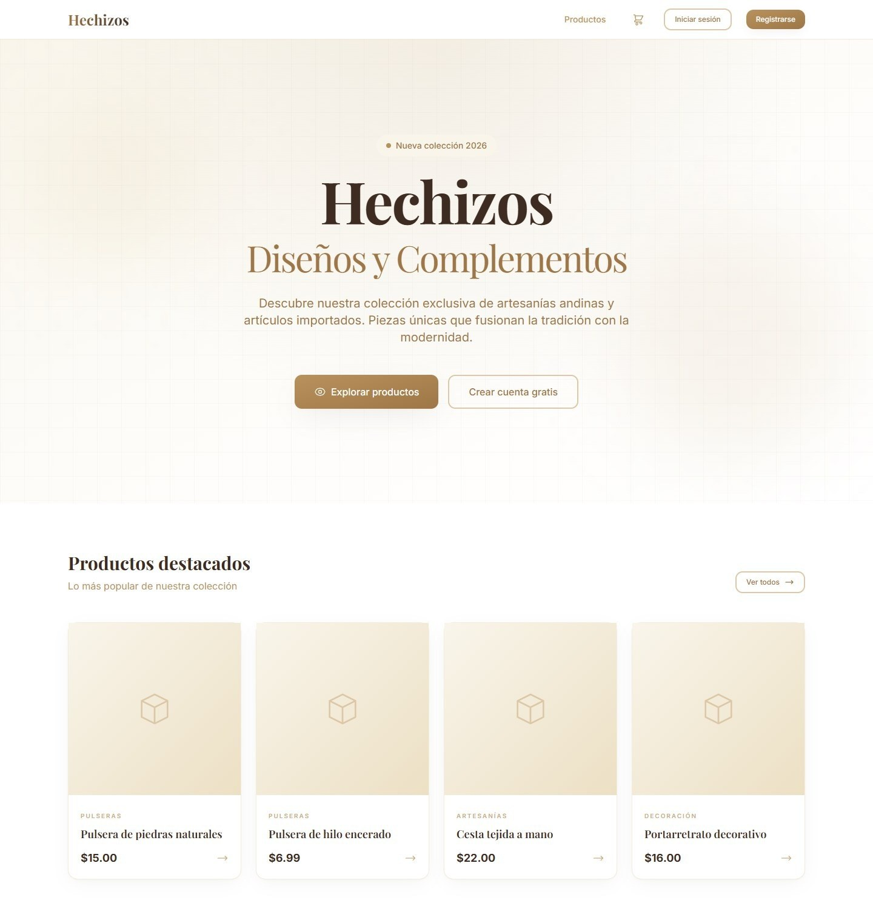
La página se compone de las siguientes áreas:
| Elemento | Descripción |
|---|---|
| Encabezado | Nombre de la tienda, enlace al catálogo, icono del carrito y botones Iniciar sesión y Registrarse. |
| Portada | Mensaje de bienvenida y botones Explorar productos y Crear cuenta gratis. |
| Productos destacados | Selección de productos activos que se muestra de forma aleatoria en cada visita. |
| Los más vendidos | Los cuatro productos con mayor cantidad vendida en los últimos siete días. |
| Lo que ofrecemos | Mensajes sobre artesanías, artículos importados y entrega. |
| Visítanos | Dirección física de la tienda en Trujillo. |
| Pie de página | Nombre de la tienda y aviso de derechos reservados. |
El inicio de sesión identifica al usuario y determina las funciones disponibles según su rol. Para ingresar:
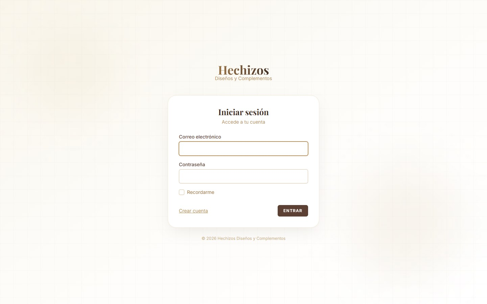
Si las credenciales son correctas, el sistema redirige al panel de control. El administrador verá el menú con los módulos de gestión; el cliente verá su panel personal con acceso al catálogo y a sus pedidos. Si los datos no coinciden, se muestra un mensaje de error y se solicita verificarlos.
| Rol | Correo | Contraseña |
|---|---|---|
| Administrador | admin@hechizos.com | password |
| Cliente | maria@test.com | password |
Estas cuentas se incluyen únicamente con fines de demostración y práctica. En un entorno real deben utilizarse contraseñas seguras y personales.
El registro permite crear una cuenta de cliente para comprar en línea y consultar el historial de pedidos. Para registrarse:
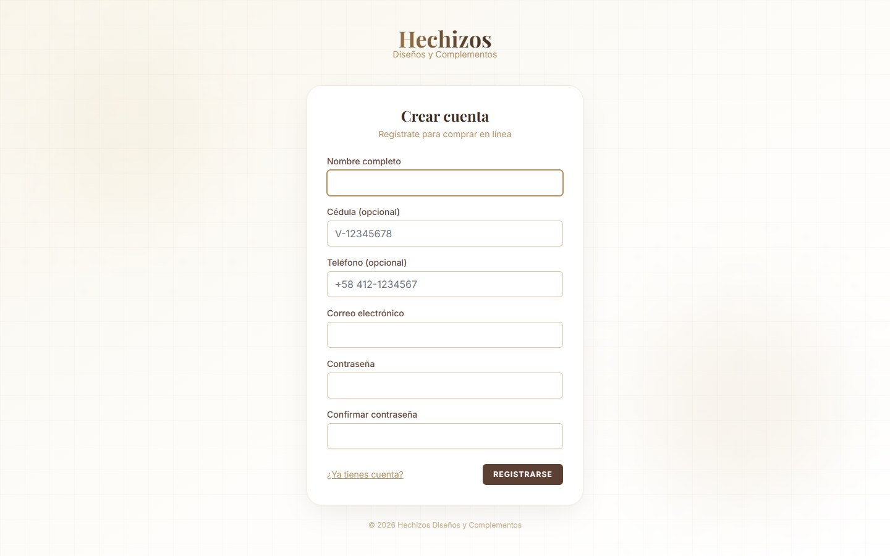
| Campo | Descripción |
|---|---|
| Nombre completo | Nombre y apellido del cliente. Se mostrará en pedidos y facturas. |
| Cédula | Documento de identidad. Campo opcional con formato de ejemplo V-12345678. |
| Teléfono | Número de contacto. Campo opcional; se recomienda completarlo para la coordinación de entregas. |
| Correo electrónico | Identificador de acceso y medio de contacto. Debe ser único. |
| Contraseña | Clave de acceso. Debe tener al menos ocho caracteres. |
| Confirmar contraseña | Repetición exacta de la contraseña para evitar errores de escritura. |
Al finalizar, la sesión se inicia automáticamente y el cliente es dirigido a su panel. Los datos de contacto se registran en este formulario; si necesita corregir el teléfono o la dirección de envío, comuníquese con la tienda.
Si el usuario olvidó su contraseña, puede solicitar un enlace de restablecimiento:
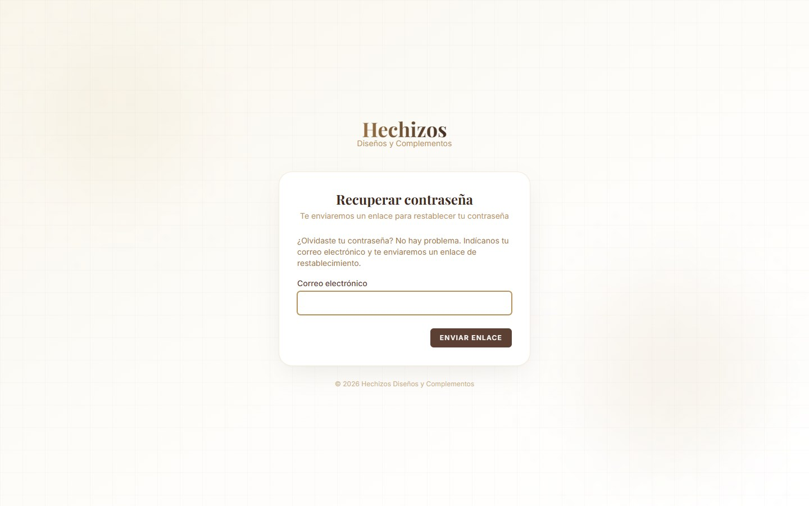
El envío del correo depende de la configuración de mensajería del sistema. Si el mensaje no llega, revise la carpeta de correo no deseado o solicite apoyo al administrador.
Para salir del sistema, haga clic en el nombre del usuario en la esquina superior derecha y seleccione Cerrar sesión. La sesión finaliza de inmediato y el sistema regresa a la página principal.
Se recomienda cerrar la sesión cuando se utilice un equipo compartido o público. No basta con cerrar la pestaña del navegador: la sesión puede permanecer activa hasta que se cierre explícitamente.
El menú de usuario se despliega al hacer clic sobre el nombre en la barra superior. Desde allí se accede a las opciones personales:
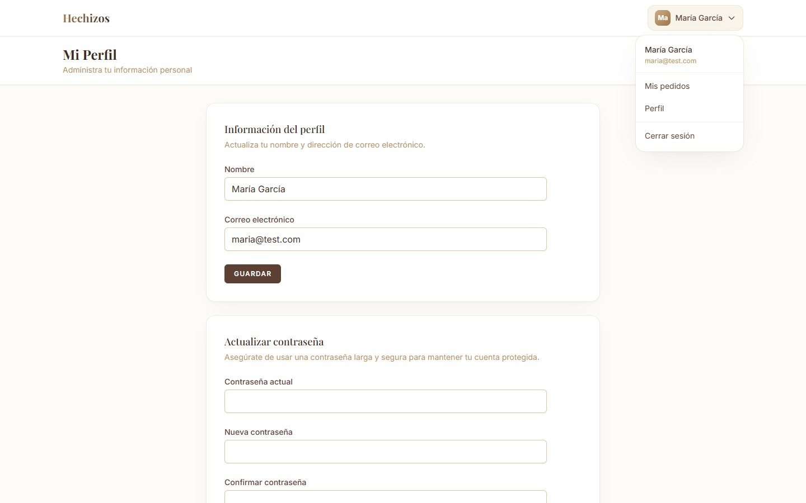
| Opción | Función |
|---|---|
| Mis pedidos | Muestra el historial de pedidos del cliente y el estado de cada uno. |
| Perfil | Permite actualizar el nombre, el correo electrónico y la contraseña. |
| Cerrar sesión | Finaliza la sesión activa y regresa a la página principal. |
En la pantalla Mi Perfil se distinguen dos bloques. El primero, Información del perfil, permite modificar el nombre y el correo electrónico. El segundo, Actualizar contraseña, solicita la contraseña actual y la nueva contraseña con su confirmación.
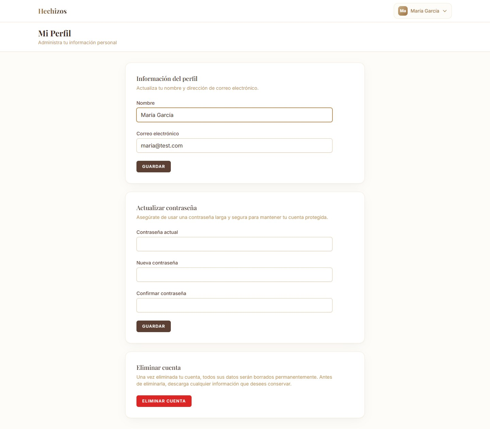
Verifique que su correo electrónico esté actualizado: es el medio de contacto y el dato utilizado para recuperar la contraseña. El perfil solo permite modificar el nombre y el correo; si el teléfono o la dirección de envío son incorrectos, comuníquese con la tienda antes de confirmar un pedido.
Perfiles de usuario, funciones asignadas y nivel de acceso.
El sistema aplica un control de acceso basado en roles. Cada cuenta tiene asignado un rol que determina las pantallas y acciones disponibles. Esta separación protege la información y evita que un cliente acceda a funciones de administración.
El administrador es responsable de la operación integral de la tienda dentro del sistema. Sus funciones principales son:
El administrador tiene visibilidad sobre todos los pedidos y puede consultar la factura de cualquier venta. Su cuenta debe estar reservada al personal autorizado.
El cliente utiliza el sistema para comprar en línea y dar seguimiento a sus pedidos. Sus funciones son:
El cliente no puede ver pedidos de otras personas, modificar precios, alterar el inventario ni acceder a los módulos administrativos. Si intenta abrir una dirección reservada, el sistema deniega el acceso.
| Módulo o acción | Administrador | Cliente |
|---|---|---|
| Página principal y catálogo | Consultar | Consultar |
| Carrito de compras | Usar | Usar |
| Confirmación de pedido | — | Usar |
| Mis pedidos | — | Consultar los propios |
| Factura en PDF | Todas las ventas | Solo las propias |
| Panel de control | Completo | Resumen personal |
| Productos y categorías | Gestionar | — |
| Inventario | Gestionar | — |
| Clientes | Consultar | — |
| Ventas y pedidos | Gestionar todos | — |
| Reporte mensual | Generar | — |
| Cierre diario | Gestionar | — |
| Perfil propio | Editar | Editar |
La creación de cuentas administrativas se realiza durante la implementación y configuración del sistema. Los clientes, en cambio, pueden crear su propia cuenta desde la pantalla de registro.
Gestión diaria del catálogo, el inventario, los clientes, las ventas y los reportes.
Este capítulo describe las funciones disponibles para el rol de administrador. Todas las opciones se encuentran en la barra de navegación superior: Productos, Inventario, Clientes, Ventas, Categorías y Cierres. El panel de control se abre al iniciar sesión.
El panel de control resume el estado general del negocio. Es la primera pantalla que ve el administrador al ingresar y permite detectar rápidamente situaciones que requieren atención, como productos con stock bajo o ventas pendientes de confirmación.
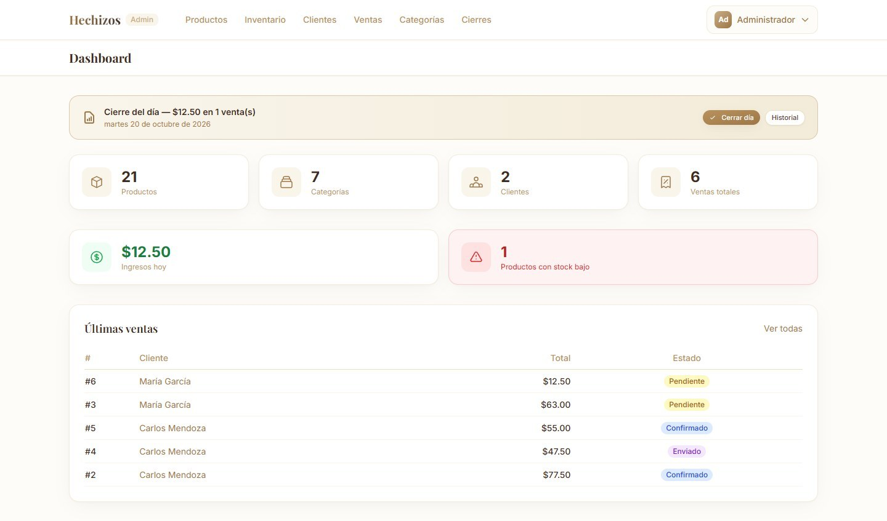
| Elemento | Descripción |
|---|---|
| Franja de cierre | Muestra el total vendido en el día y el número de ventas. Incluye el botón Cerrar día y el acceso al Historial de cierres. |
| Productos | Cantidad total de productos registrados, activos e inactivos. |
| Categorías | Cantidad de categorías creadas. |
| Clientes | Usuarios registrados con rol de cliente. |
| Ventas totales | Cantidad acumulada de ventas registradas en el sistema. |
| Ingresos hoy | Suma de las ventas registradas en la fecha actual. |
| Productos con stock bajo | Productos cuyo stock es igual o inferior al stock mínimo configurado. El indicador se resalta en rojo cuando hay casos. |
| Últimas ventas | Las cinco ventas más recientes con cliente, total y estado. El enlace Ver todas abre el módulo de ventas. |
Revise el panel al iniciar y al finalizar la jornada. Un producto con stock bajo debe reabastecerse antes de que afecte las ventas; una venta pendiente debe confirmarse o cancelarse para mantener el historial actualizado.
El módulo de productos concentra el catálogo. Desde aquí se crean los artículos, se actualizan precios y existencias y se controla su visibilidad en la tienda en línea.
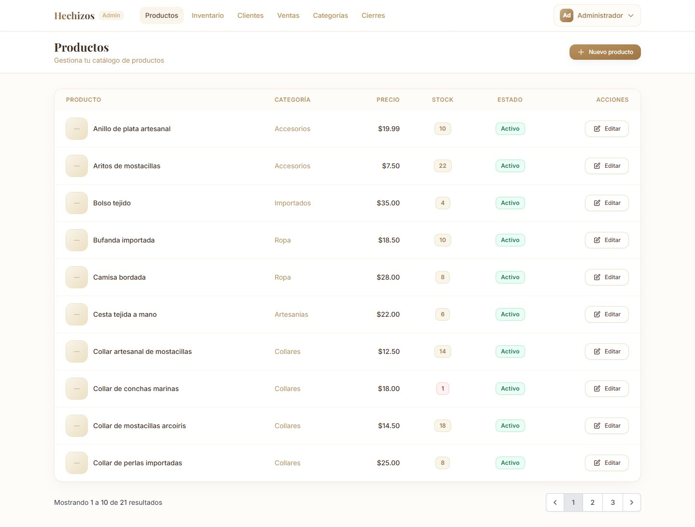
El listado muestra los productos ordenados alfabéticamente y paginados. Las columnas son:
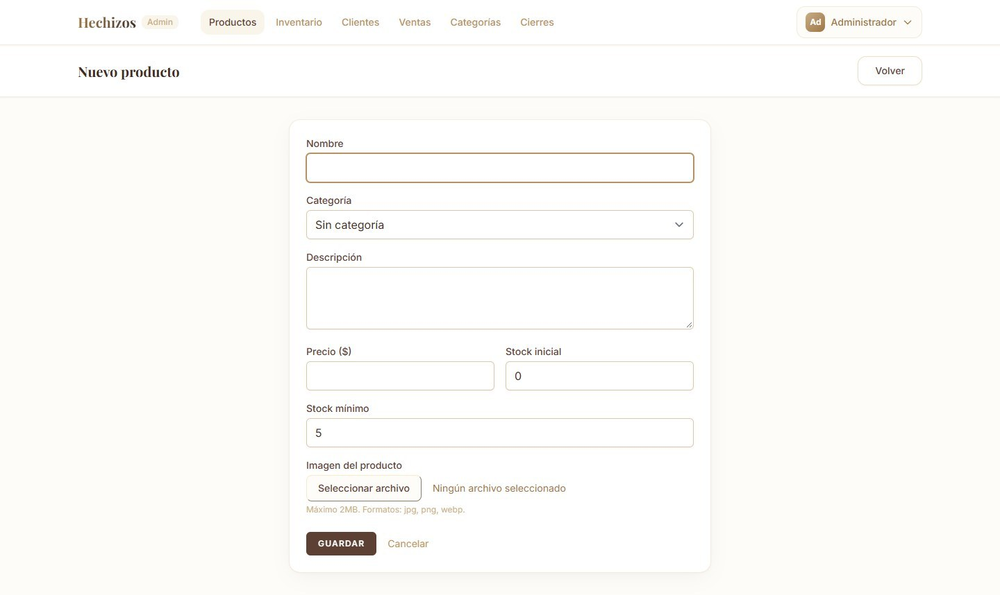
| Campo | Descripción |
|---|---|
| Nombre | Nombre comercial del producto. Obligatorio. |
| Categoría | Categoría a la que pertenece. Solo se muestran categorías activas. |
| Descripción | Texto descriptivo para el catálogo. Opcional. |
| Precio ($) | Precio unitario de venta. Admita dos decimales. |
| Stock inicial | Cantidad disponible al momento de crear el producto. |
| Stock mínimo | Umbral de alerta. Cuando el stock es igual o menor, el producto aparece como stock bajo en el panel. |
| Imagen del producto | Archivo opcional. Si no se carga, el catálogo muestra un ícono genérico. |
Haga clic en Editar sobre el producto deseado. Se habilita el mismo formulario con los datos actuales y una casilla adicional, Producto activo. Al desmarcarla, el producto deja de mostrarse en el catálogo público, pero se conserva en el historial de ventas y en los reportes.
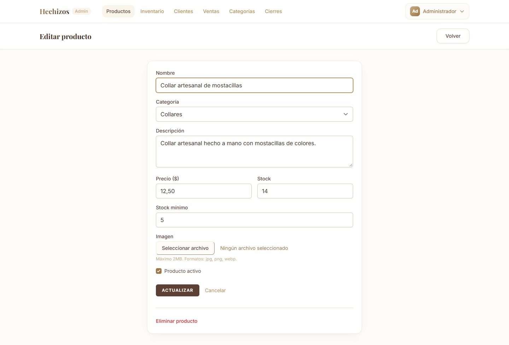
Para retirar un producto de la venta se recomienda desmarcar Producto activo en lugar de eliminarlo. Así se mantiene la trazabilidad de las ventas y facturas anteriores. Si se reemplaza la imagen, el sistema elimina el archivo anterior.
Las categorías organizan el catálogo y alimentan los filtros de la tienda en línea. El listado muestra el nombre, la descripción, la cantidad de productos asociados y el estado.
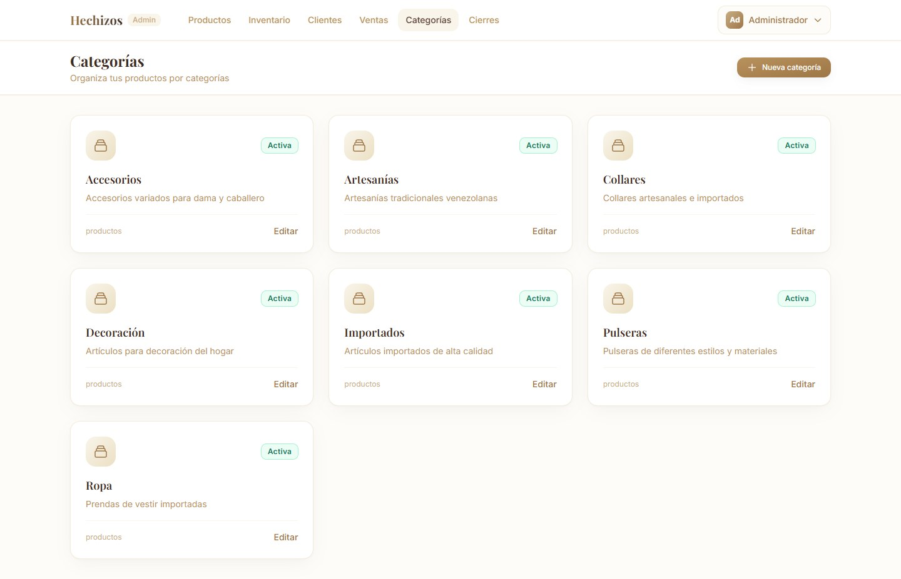
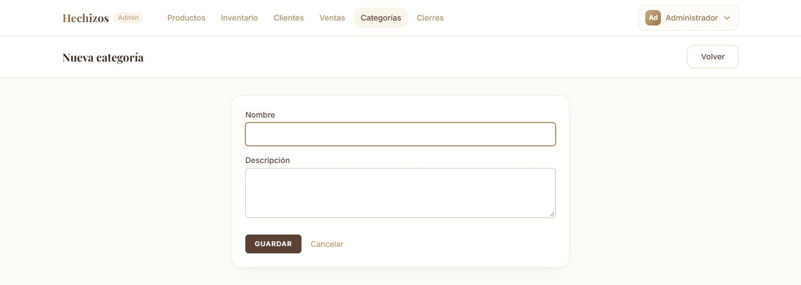
Una categoría inactiva no aparece en los filtros públicos ni en el formulario de creación de productos. El sistema impide eliminar una categoría que tenga productos asociados; en ese caso debe reasignar los productos o desactivar la categoría.
El módulo de inventario registra las entradas y salidas manuales de mercancía y mantiene el historial de cada movimiento. Es la herramienta de control para reposiciones, ajustes, mermas y devoluciones.
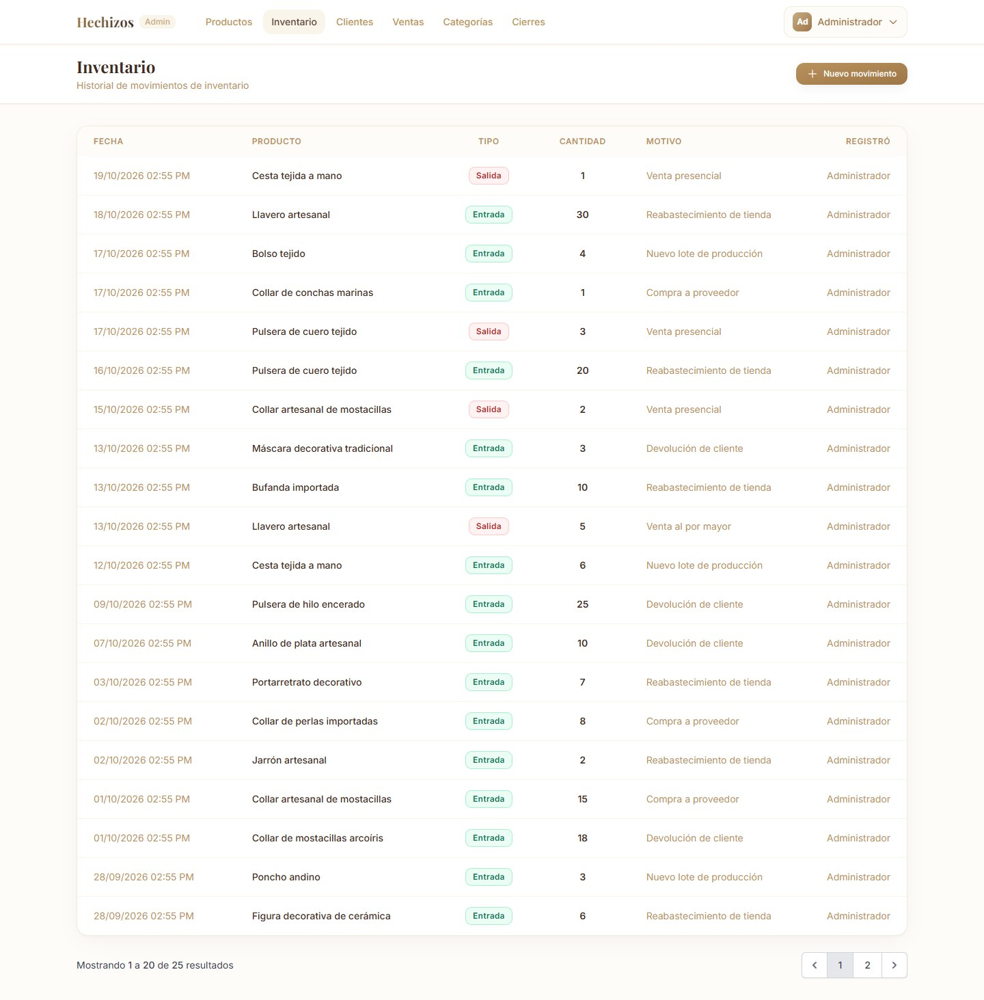
La tabla de movimientos presenta la fecha, el producto, el tipo de movimiento, la cantidad, el motivo y el usuario que lo registró. Los movimientos de entrada se identifican en verde y los de salida en rojo.
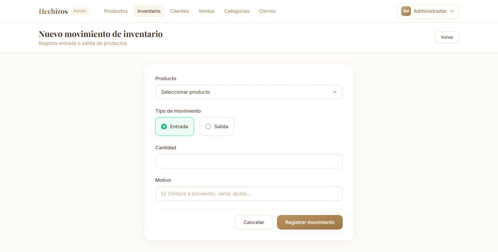
Una salida no puede superar el stock disponible; el sistema rechaza la operación e indica la cantidad actual. Las ventas descontadas automáticamente desde el catálogo o desde una venta presencial no generan un movimiento manual: se consultan en el módulo de ventas. Registre aquí solo ajustes o movimientos no asociados a una venta.
El módulo de clientes permite consultar las cuentas registradas y su historial de compras. Solo aparecen los usuarios con rol de cliente; las cuentas administrativas no se listan.
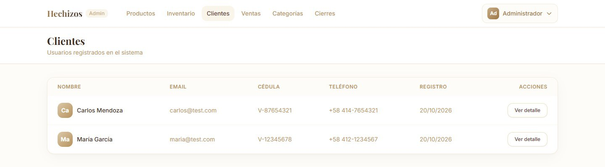
El listado muestra el nombre, el correo electrónico, la cédula, el teléfono, la fecha de registro y el botón Ver para abrir el detalle.
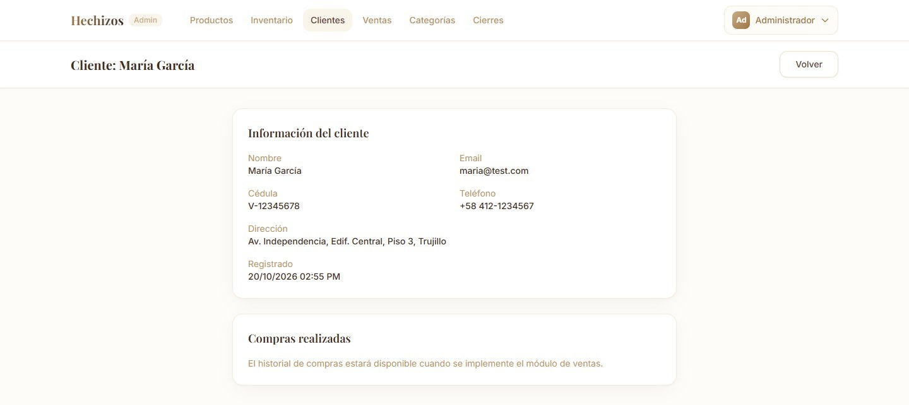
El detalle reúne el nombre, el correo, la cédula, el teléfono, la dirección y la fecha de registro. La tarjeta Compras realizadas aún no muestra el historial en esta versión; para consultar los pedidos de una persona, utilice el módulo Ventas y revise la columna del cliente.
La información de los clientes es confidencial. Utilícela únicamente para la operación de la tienda y no la comparta con terceros.
El módulo de ventas concentra todos los pedidos, tanto los generados en línea por los clientes como los registrados presencialmente por el administrador. Desde aquí se actualiza el estado y se descargan las facturas.
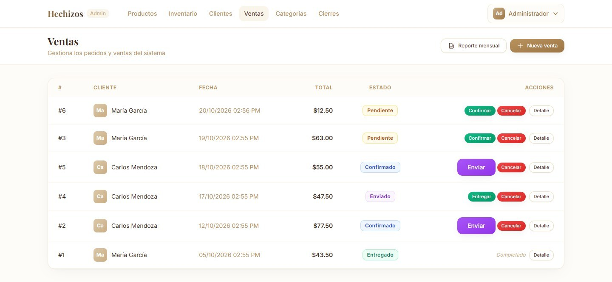
Las columnas del listado son: número de venta, cliente, fecha, total, estado y acciones. Las acciones rápidas cambian según el estado actual del pedido:
| Estado actual | Acciones disponibles |
|---|---|
| Pendiente | Confirmar, Cancelar y Detalle. |
| Confirmado | Enviar, Cancelar y Detalle. |
| Enviado | Entregar, Cancelar y Detalle. |
| Entregado | El pedido se muestra como completado; queda disponible Detalle. |
| Cancelado | El pedido se conserva para consulta; queda disponible Detalle. |
Al hacer clic en una acción rápida se abre una ventana de confirmación que indica el nuevo estado. El botón Confirmar de la ventana aplica el cambio; Cancelar cierra la ventana sin modificar el pedido.
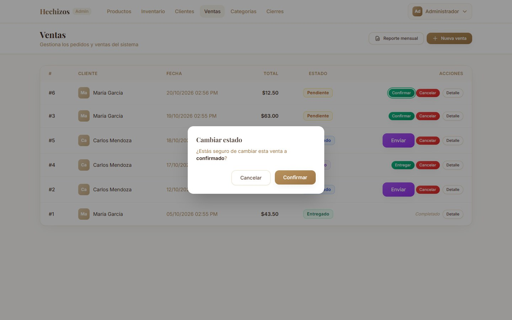
El botón Detalle abre la ficha completa del pedido. Allí se muestran los datos del cliente, la fecha, el estado, los productos con cantidades y precios, y el total. El administrador puede cambiar el estado desde el selector y descargar la factura en PDF.
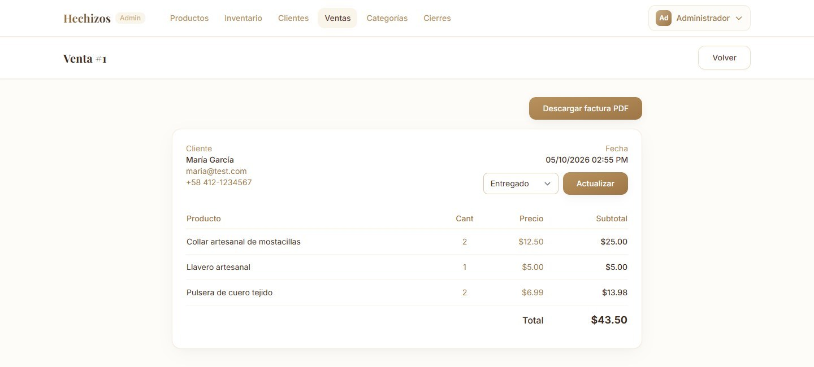
Al cancelar una venta, el stock no se repone automáticamente. Si la mercancía regresa al inventario, registre una entrada manual en el módulo de inventario con el motivo correspondiente. Las ventas canceladas se excluyen del reporte mensual y del cierre diario.
Las ventas realizadas en la tienda física se registran desde Ventas → Nueva venta. Este flujo no requiere una cuenta de cliente: la venta queda asociada al usuario administrador que la registra.
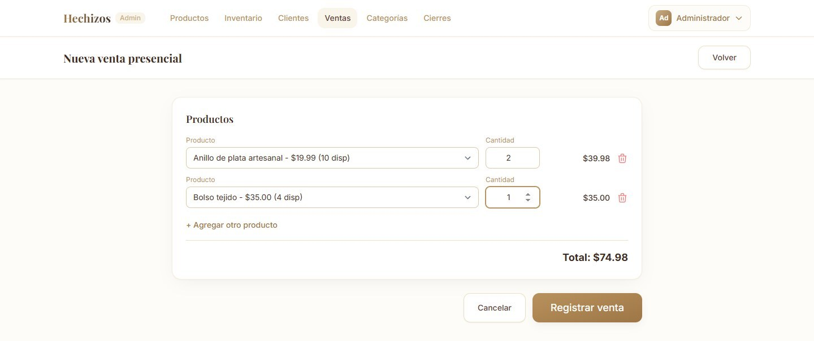
Al registrar la venta, el sistema crea el pedido en estado Confirmado, descuenta las cantidades del stock y abre la ficha de la venta, desde donde se puede descargar la factura. La cantidad solicitada se ajusta al stock disponible; si el producto no tiene existencias, se muestra un mensaje de error y no se registra la venta.
El reporte mensual consolida las ventas de un mes calendario y genera un documento PDF para análisis o archivo. Es útil para evaluar la evolución del negocio y presentar resultados.
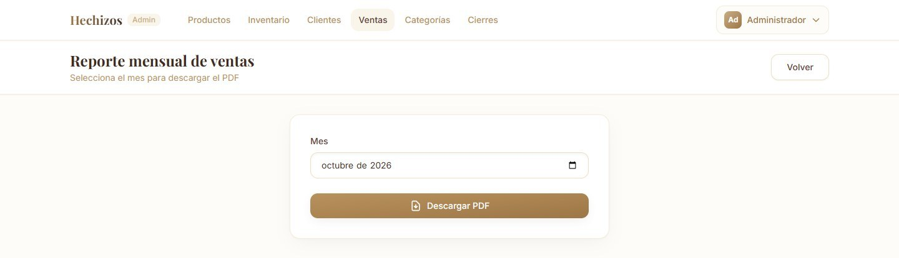
El PDF incluye el total vendido en el mes, la cantidad de ventas realizadas, la cantidad de días con ventas y el detalle agrupado por día, con cliente, productos y total de cada pedido.
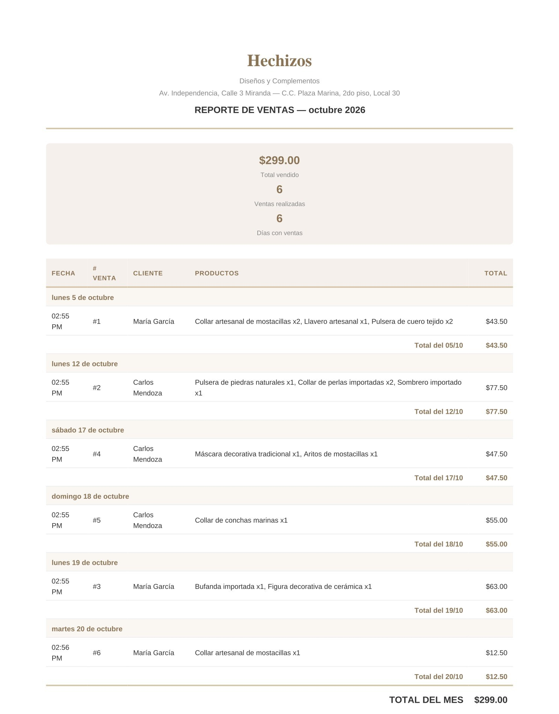
El reporte se calcula con las ventas registradas hasta el momento de la descarga y excluye las ventas canceladas. Si se modifica una venta después de generar el PDF, será necesario descargar el reporte nuevamente para reflejar el cambio.
El cierre diario registra un resumen de las ventas de una fecha y conserva el documento PDF como respaldo. Sirve para conciliar la caja al final de la jornada y dejar constancia del total vendido.
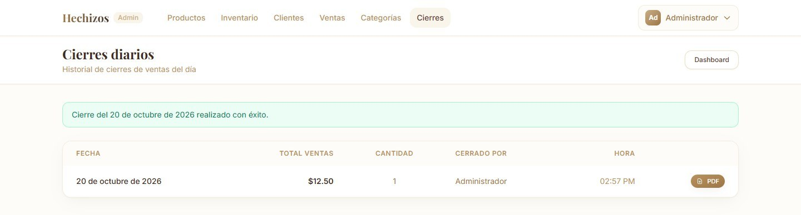
Una vez realizado el cierre, el panel de control cambia la franja del día: muestra el texto Cierre de hoy completado con el monto cerrado y habilita el botón Descargar PDF.
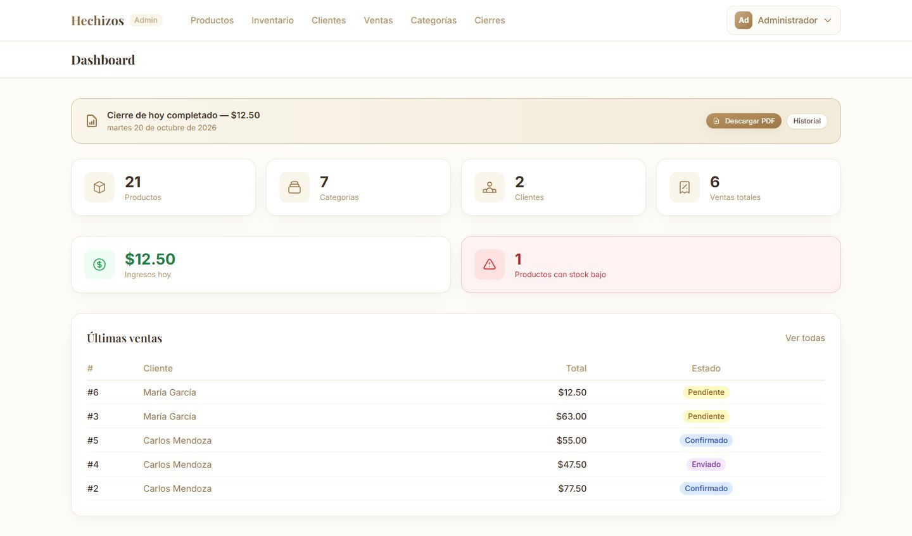
El documento de cierre presenta la fecha, el total vendido, la cantidad de ventas, el detalle de cada operación con hora, cliente, productos y total, y el total del día.
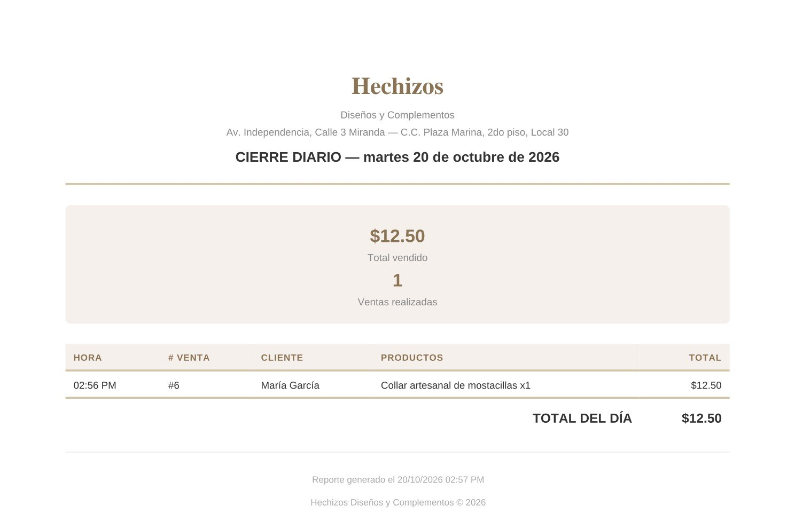
Solo puede existir un cierre por fecha. Si intenta registrar un segundo cierre para el mismo día, el sistema muestra un mensaje de error. El cierre no modifica las ventas ni el inventario, y no bloquea la operación: las ventas registradas después del cierre no se suman al documento ya emitido, por lo que se recomienda realizarlo al finalizar la jornada.
Recorrido del cliente desde la vitrina virtual hasta la factura del pedido.
Este capítulo describe la experiencia de compra del cliente. Todas las pantallas son accesibles desde la página principal y la barra de navegación. Para confirmar un pedido es necesario tener una cuenta y haber iniciado sesión.
La página principal abre con la sección Productos destacados, una selección aleatoria de cuatro productos activos que renueva la vitrina en cada visita. Más abajo, la sección Los más vendidos muestra los cuatro productos con mayor cantidad vendida en los últimos siete días, identificados con los números 1 a 4. Si no existen ventas en ese período, el sistema recurre a una selección aleatoria de productos activos para mantener la sección completa.
Al iniciar sesión, el cliente encuentra la misma selección en su panel personal, bajo el título Los más vendidos, junto a un acceso directo al catálogo completo.
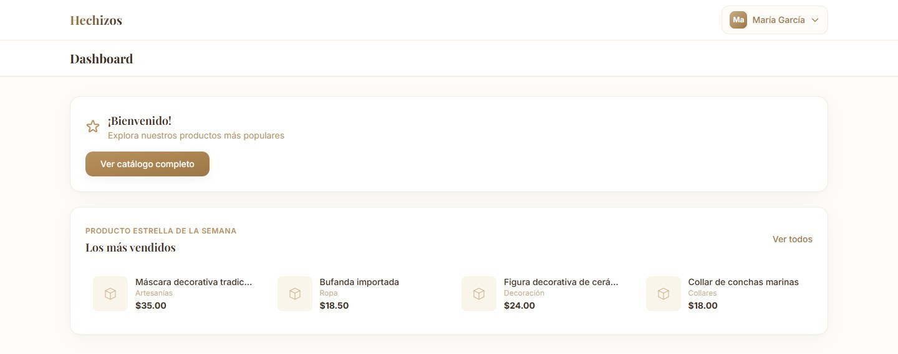
Los productos se calculan con las ventas no canceladas de los últimos siete días. Por eso la selección cambia con el tiempo y refleja la preferencia real de los compradores.
El catálogo reúne todos los productos activos y permite buscar por nombre o descripción y filtrar por categoría. Es accesible desde el enlace Productos o desde los botones Explorar productos y Ver todos.
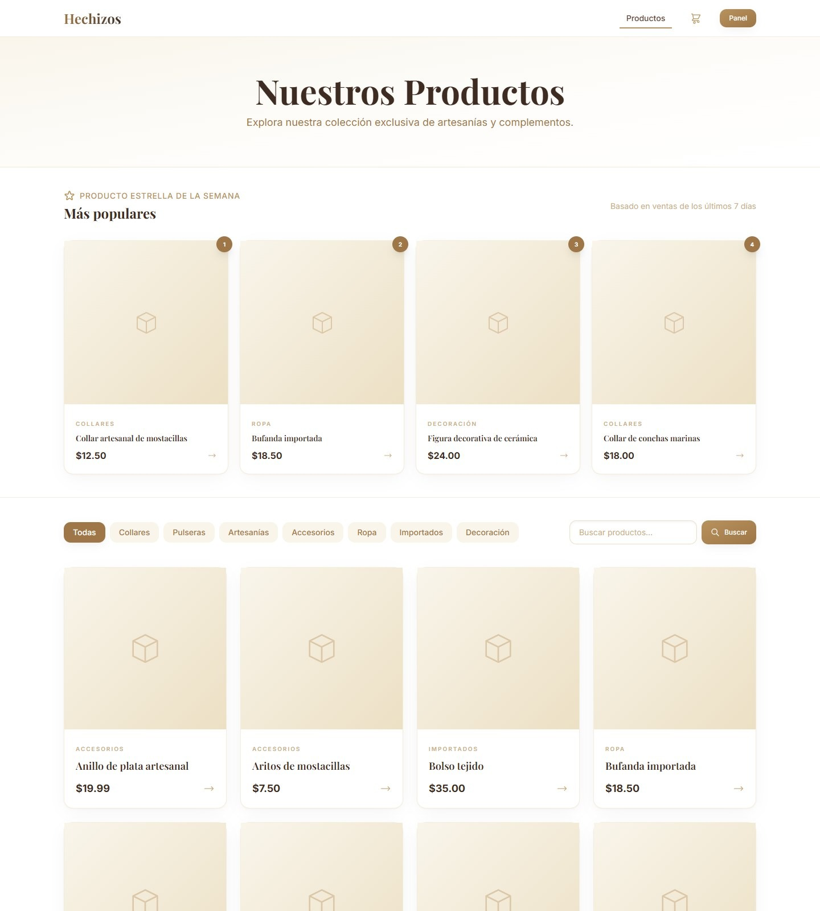
Cada tarjeta muestra la categoría, el nombre y el precio. Solo se listan productos activos: los productos inactivos no aparecen en el catálogo público. Un producto agotado sí se muestra, pero en su detalle se identifica como Agotado y no permite agregarse al carrito.
El detalle presenta la información completa del artículo y permite agregarlo al carrito.
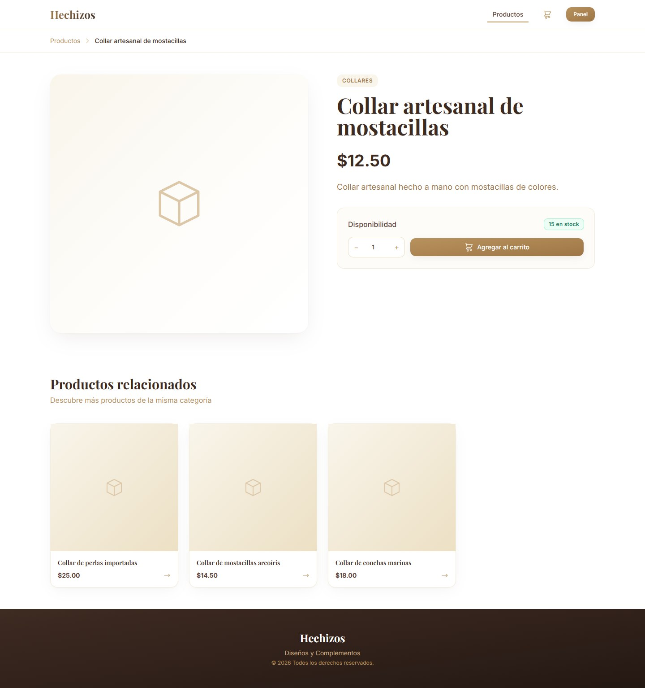
La sección Productos relacionados muestra otros artículos de la misma categoría. Si el visitante no ha iniciado sesión, en lugar del botón de compra se muestra el enlace Inicia sesión para comprar. Si el producto no tiene existencias, el botón se deshabilita.
El carrito conserva los productos seleccionados mientras el cliente navega. Es accesible desde el ícono del carrito en la barra superior, que muestra la cantidad de artículos agregados.
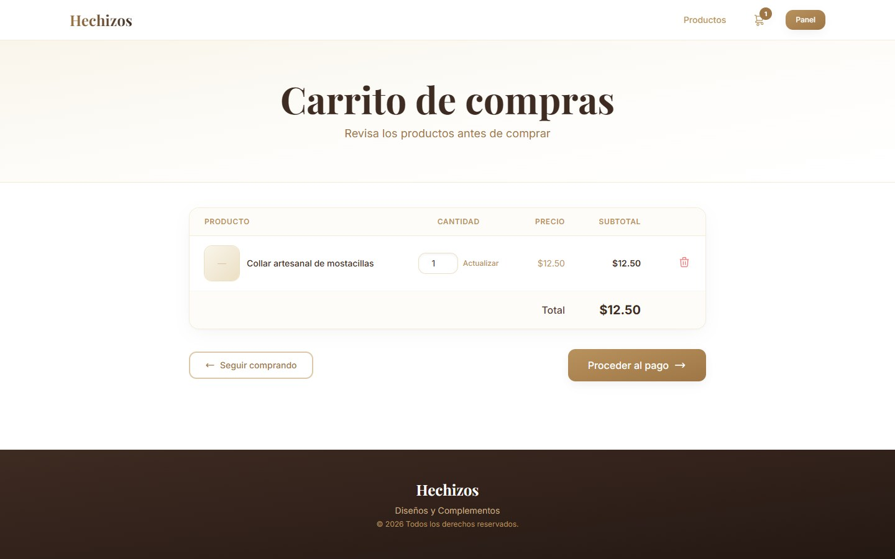
Si el cliente no ha iniciado sesión, el botón de finalización lo invita a ingresar. Las cantidades se validan nuevamente al confirmar el pedido para evitar compras superiores al stock disponible.
La pantalla de confirmación resume la compra y solicita revisar los datos de envío antes de generar el pedido.
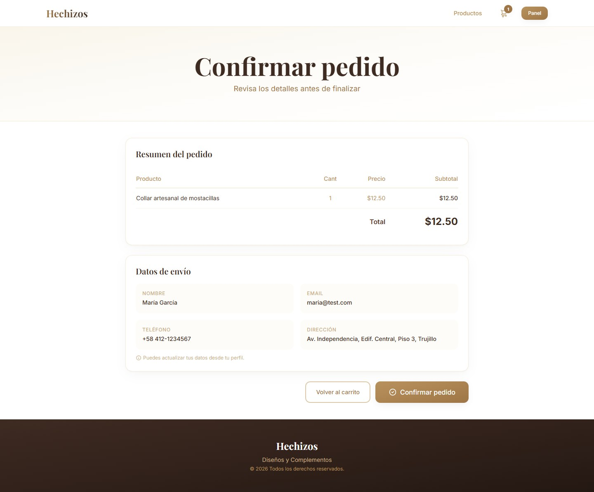
Al confirmar, el sistema crea el pedido en estado Pendiente, descuenta las cantidades del inventario, vacía el carrito y muestra la pantalla de confirmación con el número de pedido y los accesos al detalle y al catálogo.
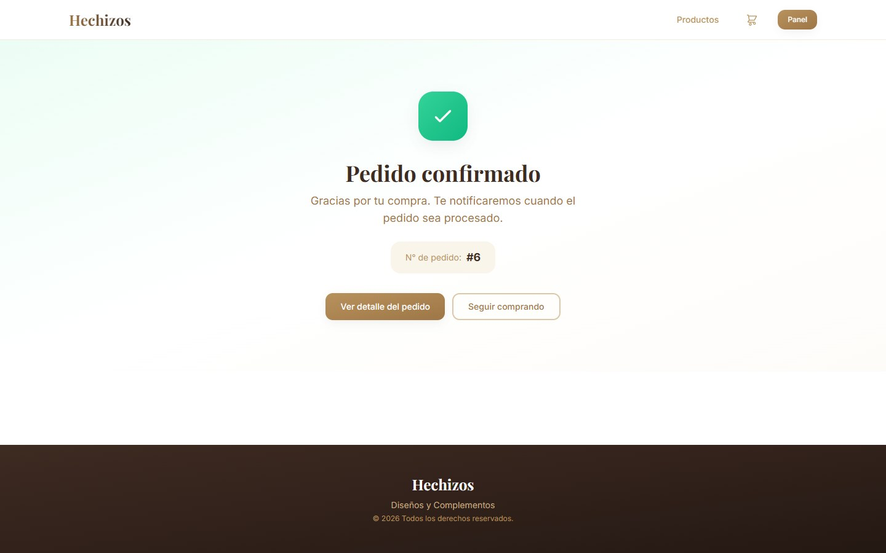
El pedido queda registrado para coordinación con la tienda. El sistema no procesa pagos en línea; el cliente debe comunicarse con Hechizos para acordar el pago y la entrega.
El historial de pedidos permite al cliente consultar sus compras y el estado de cada una. Se accede desde el menú de usuario, opción Mis pedidos.
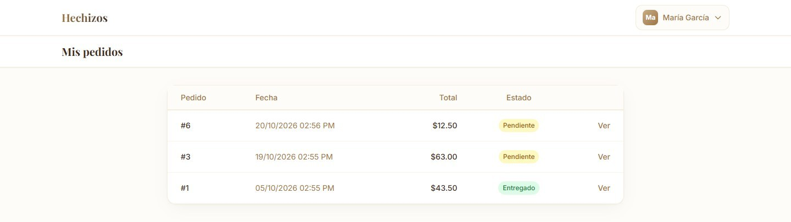
Cada pedido muestra el número, la fecha, el total y el estado. El enlace Ver abre la ficha con los productos, las cantidades, los precios y el total, y permite descargar la factura. El cliente solo puede consultar sus propios pedidos: si intenta abrir el pedido de otra persona, el sistema deniega el acceso.
Cada venta genera una factura descargable en formato PDF. El cliente la obtiene desde el detalle de su pedido; el administrador puede descargarla desde el detalle de cualquier venta.
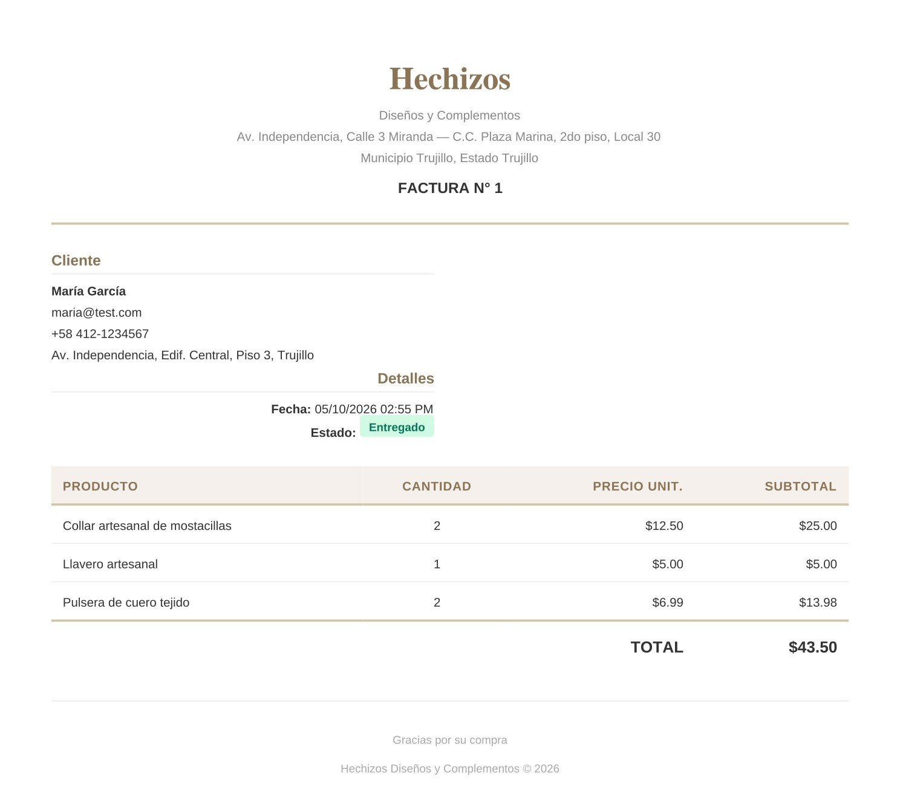
La factura incluye los datos de la tienda, el número de factura, la fecha, el estado del pedido, los datos del cliente, el detalle de productos con cantidad, precio unitario y subtotal, y el total general.
El número de factura coincide con el número interno de la venta. Es un documento de control interno y no sustituye los comprobantes fiscales exigidos por la legislación.
Cómo localizar información, interpretar los estados y obtener documentos de control.
Además de registrar operaciones, el sistema conserva el historial necesario para responder consultas y respaldar la gestión. Este capítulo explica dónde encontrar cada dato y cómo interpretarlo.
El módulo Ventas es el punto de consulta de todos los pedidos. El listado se ordena de la venta más reciente a la más antigua y muestra veinte registros por página. Para localizar una venta anterior, avance o retroceda con la paginación inferior.
Cada fila ofrece el número de venta, el cliente, la fecha y hora, el total, el estado y las acciones disponibles. El botón Detalle abre la ficha completa; desde allí se consultan los productos, se cambia el estado y se descarga la factura.
Si conoce el nombre del comprador, el módulo Clientes permite consultar sus datos de contacto. El historial de pedidos, en cambio, se revisa en Ventas, donde cada fila identifica al cliente.
El listado no cuenta con un buscador por texto. Para encontrar una venta específica utilice la paginación y revise la columna del cliente.
El historial de inventario conserva cada entrada y salida manual, con la fecha, el producto, la cantidad, el motivo y el usuario responsable. Los movimientos se ordenan del más reciente al más antiguo y se paginan de veinte en veinte.
Este historial permite reconstruir por qué un producto tiene determinada existencia. Un movimiento de entrada incrementa el stock y suele corresponder a una compra a proveedor, una devolución o un ajuste positivo. Un movimiento de salida lo reduce y suele corresponder a una merma, un ajuste negativo o una devolución al proveedor.
Escriba siempre un motivo claro y verificable. Un historial con motivos genéricos pierde utilidad cuando sea necesario auditar diferencias de inventario.
El estado indica en qué punto del proceso se encuentra un pedido. Es visible para el administrador y para el cliente, y determina qué acciones rápidas se ofrecen en el listado.
| Estado | Significado | Cómo se asigna |
|---|---|---|
| Pendiente | El pedido fue registrado y espera la confirmación de la tienda. | Automáticamente al confirmar una compra en línea. |
| Confirmado | La tienda aceptó el pedido y lo prepara para el envío. | Al confirmar un pedido pendiente o al registrar una venta presencial. |
| Enviado | El pedido salió hacia el cliente. | Acción manual del administrador. |
| Entregado | El cliente recibió el pedido. Es el estado final de una venta exitosa. | Acción manual del administrador. |
| Cancelado | El pedido no se concretó. Se conserva para consulta, pero no se contabiliza. | Acción manual del administrador. |
El flujo recomendado es Pendiente → Confirmado → Enviado → Entregado. La cancelación puede aplicarse mientras el pedido no haya sido entregado. El detalle de la venta permite seleccionar cualquiera de los cinco estados; utilice esa opción solo para corregir un registro, no para saltar etapas del proceso.
Las ventas pendientes, confirmadas, enviadas y entregadas se incluyen en el reporte mensual y en el cierre diario. Solo las ventas canceladas se excluyen. Mantenga los estados actualizados para que los reportes reflejen la operación real.
El sistema genera tres documentos PDF con propósitos distintos. La siguiente tabla resume su alcance.
| Documento | Contenido | Alcance |
|---|---|---|
| Factura | Datos de la tienda y del cliente, número de factura, fecha, estado, productos, cantidades, precios y total. | Una venta específica. Disponible para el administrador y para el cliente dueño del pedido. |
| Reporte mensual | Total vendido, cantidad de ventas, días con ventas y detalle agrupado por día. | Un mes calendario. Excluye ventas canceladas. |
| Cierre diario | Total del día, cantidad de ventas y detalle de cada operación con hora, cliente y productos. | Una fecha. Excluye ventas canceladas. Solo un cierre por día. |
Los documentos se generan en el momento de la descarga. Si una venta cambia de estado después de emitido un reporte o un cierre, el documento anterior no se actualiza: descárguelo nuevamente si necesita reflejar el cambio. Conserve los PDF de cierre como respaldo de cada jornada.
Cuentas, datos maestros, respaldo y prácticas recomendadas para una operación ordenada.
Este capítulo reúne las tareas de mantenimiento que aseguran la continuidad del sistema. No forman parte de la operación diaria, pero son necesarias para proteger la información y evitar errores acumulados.
El sistema distingue dos roles: administrador y cliente. El rol se asigna al crear la cuenta y no se modifica desde la interfaz. Las cuentas de cliente se crean mediante el formulario público de registro; las cuentas administrativas se aprovisionan durante la instalación o mediante el equipo de desarrollo.
| Cuenta demo | Correo | Contraseña | Rol |
|---|---|---|---|
| Administrador | admin@hechizos.com | password | Administrador |
| María García | maria@test.com | password | Cliente |
| Carlos Mendoza | carlos@test.com | password | Cliente |
Cada usuario puede cambiar su contraseña desde Perfil → Actualizar contraseña, indicando la contraseña actual. Si un cliente olvida su clave, puede restablecerla desde la pantalla de inicio de sesión. El administrador no puede consultar las contraseñas almacenadas, ya que se guardan cifradas.
Eliminar una cuenta es una acción irreversible y está disponible en el perfil del propio usuario. Al eliminar una cuenta de cliente se eliminan también sus pedidos y facturas, lo que altera el historial y los reportes. Antes de eliminar una cuenta con compras, evalúe conservarla o desactivar su uso por otro medio.
Se denominan datos maestros los registros que alimentan la operación: productos, categorías, precios, stock mínimo y datos de clientes. Su calidad determina la confiabilidad de las ventas y los reportes.
Los cambios en productos y precios no alteran las ventas ya registradas: cada línea de venta conserva el precio unitario aplicado en el momento de la operación. Por eso es importante revisar los precios antes de registrar una venta y no después.
La información del sistema reside en la base de datos y en el almacenamiento de archivos. Para un respaldo completo deben incluirse ambos componentes:
Realice respaldos periódicos, especialmente antes de actualizaciones, cambios masivos de precios o migraciones. Verifique que el respaldo pueda restaurarse y conserve una copia fuera del servidor principal. El acceso a los respaldos debe estar restringido al personal autorizado.
La frecuencia del respaldo depende del volumen de operaciones. Para una tienda con ventas diarias se recomienda al menos un respaldo diario de la base de datos y uno semanal de los archivos.
Respuestas a las dudas más comunes sobre el acceso, la operación y los reportes.
Términos utilizados a lo largo del manual.
| Administrador | Usuario con acceso a todos los módulos de gestión: productos, categorías, inventario, clientes, ventas, reportes y cierres. |
| Carrito | Espacio temporal donde el cliente reúne los productos que desea comprar antes de confirmar el pedido. |
| Categoría | Agrupación de productos que facilita la organización del catálogo y los filtros de búsqueda. |
| Cierre diario | Documento que resume las ventas de una fecha y se conserva como respaldo de la jornada. |
| Cliente | Usuario registrado que compra en línea y consulta sus pedidos. No accede a los módulos administrativos. |
| Estado | Situación de un pedido: pendiente, confirmado, enviado, entregado o cancelado. |
| Factura | Documento PDF con el detalle de una venta, su cliente, sus productos y su total. |
| Inventario | Conjunto de existencias disponibles de cada producto. |
| Movimiento de entrada | Registro que aumenta el stock de un producto, por reposición, devolución o ajuste positivo. |
| Movimiento de salida | Registro que reduce el stock de un producto, por merma, ajuste negativo o devolución al proveedor. |
| Pedido | Solicitud de compra confirmada por un cliente. En el sistema se almacena como una venta. |
| Producto activo | Producto publicado en el catálogo y disponible para la venta, siempre que tenga existencias. |
| Producto inactivo | Producto retirado de la vitrina pública que conserva su historial en ventas y reportes. |
| Reporte mensual | Documento PDF que consolida las ventas de un mes calendario, excluyendo las canceladas. |
| Rol | Perfil de acceso asignado a una cuenta: administrador o cliente. |
| Stock | Cantidad disponible de un producto en inventario. |
| Stock mínimo | Umbral configurado por producto para emitir la alerta de stock bajo cuando la existencia es igual o menor. |
| Venta | Operación económica que registra los productos adquiridos, su precio y su total. |
| Venta presencial | Venta registrada por el administrador para un comprador que no necesariamente tiene cuenta en el sistema. |
Fin del documento. Este manual documenta la versión 1.0 del Sistema de Gestión de Inventario y Ventas de Hechizos Diseños y Complementos.